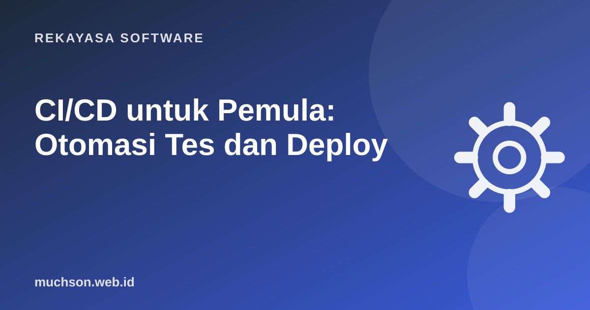

Beranda › Artikel › Rekayasa Software
Rekayasa SoftwareCI/CD untuk Pemula: Otomasi Tes dan Deploy
Pernah lupa menjalankan tes sebelum upload ke server? Atau deploy manual yang langkahnya hanya diingat satu orang? CI/CD memindahkan langkah-langkah itu ke mesin: setiap kali kode dikirim, tes berjalan sendiri, dan bila semuanya hijau, aplikasi bisa terpasang otomatis.

CI dan CD dalam satu kalimat
- Continuous Integration (CI): setiap perubahan kode digabung sering dan otomatis diuji, sehingga kesalahan ketahuan dalam menit, bukan minggu.
- Continuous Delivery: kode yang lolos selalu dalam keadaan siap dirilis; rilis tinggal satu klik.
- Continuous Deployment: selangkah lebih jauh, kode yang lolos langsung terpasang ke produksi tanpa klik.
Pipeline pertama dengan GitHub Actions
GitHub Actions membaca file YAML di folder .github/workflows/. Contoh berikut menjalankan lint dan tes untuk proyek Node.js setiap ada push dan pull request.
# .github/workflows/ci.yml
name: CI
on:
push:
branches: [main]
pull_request:
jobs:
test:
runs-on: ubuntu-latest
steps:
- uses: actions/checkout@v4
- uses: actions/setup-node@v4
with:
node-version: 20
cache: npm
- run: npm ci
- run: npm run lint
- run: npm test| Bagian | Arti |
|---|---|
on | Kapan workflow berjalan (push, PR, jadwal). |
jobs | Kumpulan pekerjaan; bisa paralel. |
runs-on | Mesin virtual yang dipakai. |
steps | Langkah berurutan: aksi siap pakai (uses) atau perintah (run). |
npm ci | Install persis sesuai package-lock, lebih konsisten dari npm install. |
Versi Python
- uses: actions/setup-python@v5
with:
python-version: '3.12'
- run: pip install -r requirements.txt
- run: pytestMenyimpan secret dengan benar
Token deploy, API key, dan password database tidak boleh ditulis di file workflow. Simpan di Settings → Secrets and variables → Actions, lalu panggil sebagai ${{ secrets.NAMA }}. GitHub menyamarkan nilainya di log.
- name: Deploy
if: github.ref == 'refs/heads/main'
run: npx wrangler deploy
env:
CLOUDFLARE_API_TOKEN: ${{ secrets.CLOUDFLARE_API_TOKEN }}Bila sebuah secret pernah ter-commit ke repositori, anggap sudah bocor walau commit-nya dihapus. Cabut (revoke) dan buat yang baru.
Kebiasaan yang membuat CI bermanfaat
- Cepat: usahakan di bawah 10 menit. Pakai cache dependensi.
- Wajib hijau sebelum merge: aktifkan branch protection yang mensyaratkan status check.
- Pisahkan staging dan produksi: deploy otomatis ke staging, produksi dengan persetujuan.
- Jangan abaikan tes yang "kadang gagal": tes tidak stabil membuat tim berhenti percaya pada CI. Perbaiki akarnya.
Tanya jawab
Apakah GitHub Actions gratis?
Selain GitHub Actions, ada apa saja?
Apakah proyek pribadi butuh CI?
Sumber dan bacaan lanjut
- GitHub Docs: Understanding GitHub Actions
- GitHub Docs: Using secrets in GitHub Actions
- Martin Fowler: Continuous Integration